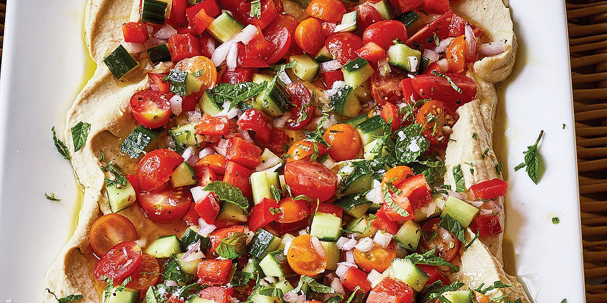

Hummus Salad

Description
Serves 6 for lunch, 8 as a side.
This salad from Ina Garten's Cook Like a Pro is an easy, no-cook vegetarian dinner.
Ingredients
- 1 (1 pound 13-ounce) can chickpeas, rinsed and drained
- 1 cup tahini (ground sesame paste)
- 1 cup freshly squeezed lemon juice (4 to 6 lemons), divided
- 3 tablespoons chopped garlic (9 cloves)
- 1½ teaspoons ground cumin
- ½ teaspoon Sriracha
- Good olive oil
- Kosher salt
- Freshly ground black pepper
- 1 large hothouse cucumber, unpeeled, halved, seeded, and ½-inch diced
- 2 cups heirloom cherry tomatoes, halved or quartered
- 1 cup (½-inch-diced) Holland red bell pepper (1 large)
- ¾ cup (¼-inch-diced) red onion
- ½ cup julienned fresh mint leaves, for garnish
- Toasted pita bread, for serving
Steps
- For the hummus, place the chickpeas, tahini, ¾ cup of the lemon juice, the garlic, cumin, Sriracha, 2 tablespoons olive oil, 1 tablespoon salt, and 1 teaspoon black pepper in the bowl of a food processor fitted with the steel blade and process until the mixture is completely smooth. If the hummus is too thick, add a few tablespoons of warm water until it is creamy but still thick and spreadable.
- In a large bowl, combine the cucumber, tomatoes, bell pepper, and red onion. Add ¹⁄3 cup olive oil, the remaining ¼ cup lemon juice, 2 -teaspoons salt, and 1 teaspoon black pepper and combine.
- Spoon the hummus onto a large (12 16-inch) serving platter, spreading it out with a raised edge. With a slotted spoon, mound the vegetable salad on the hummus, leaving the edges of the hummus visible. Sprinkle the vegetables and hummus with the mint and extra salt. Drizzle with olive oil and serve at room temperature with pita bread.